Working to End Hunger and Homelessness in Idaho Falls
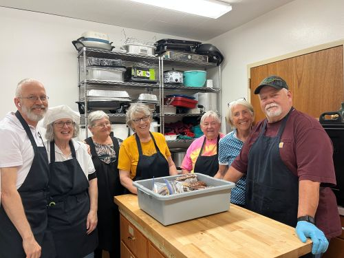
The People in Need Coalition (PINC) is a volunteer-run organization that offers free meals and resources to the community every week.
No one is paid -- every service is offered by volunteers who care deeply about helping those in need.
First Christain Church
1800 12th Street Idaho Falls
(Corner of 12th and Woodruff)
Serving Meals Between 11:30 am - 1 pm
Monday, Wednesday, Friday
We also have a Sharing Table on the same days from 9 am - 1 pm
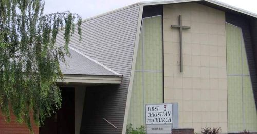
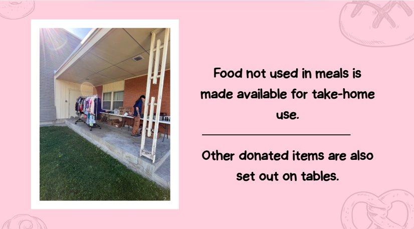
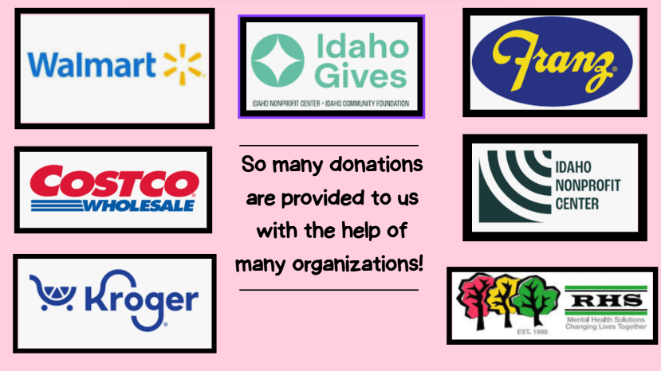
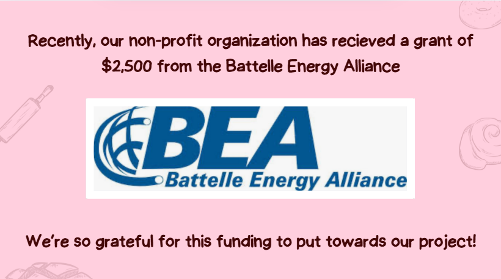
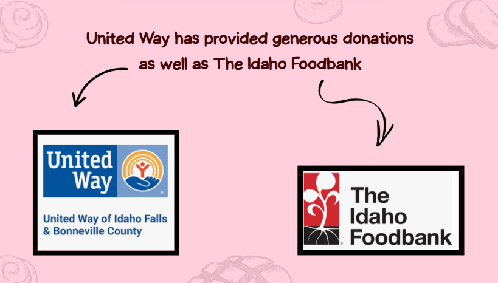
We are grateful for the support of our donors who make our mission possible.
We are always looking for more donors to help us continue our work.
If you would like to donate, please contact us or visit our donation page.
Here are some of our current donors from companies to local gardens:
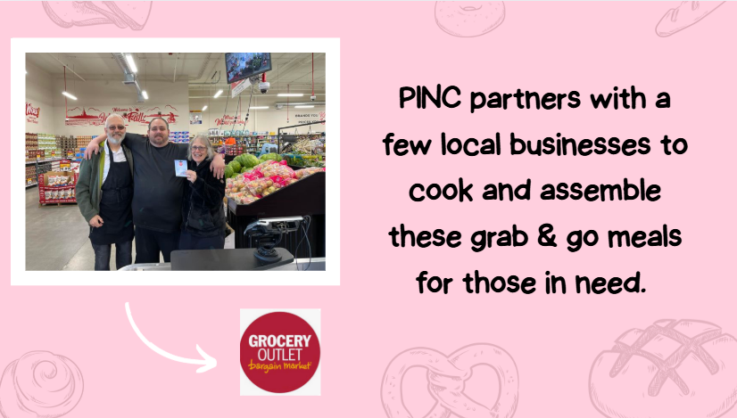
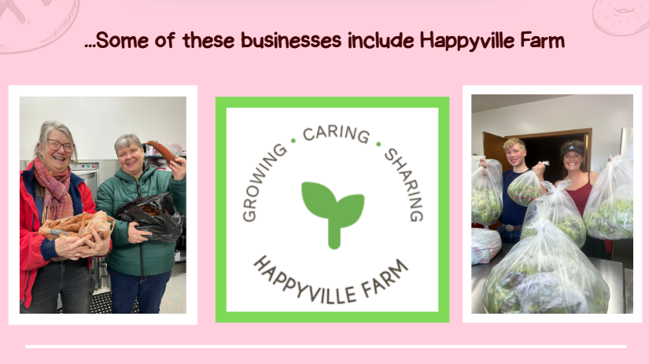
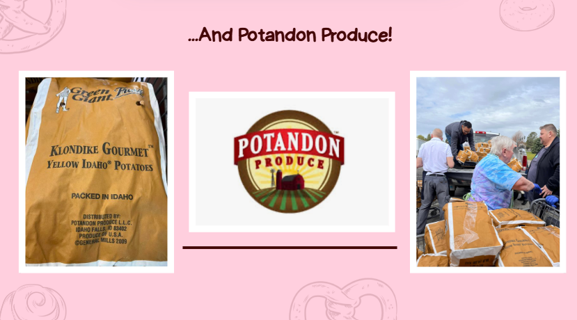
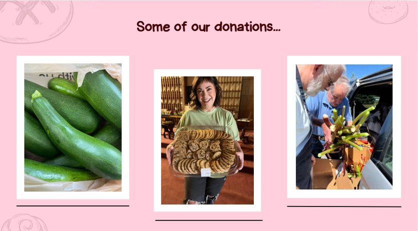
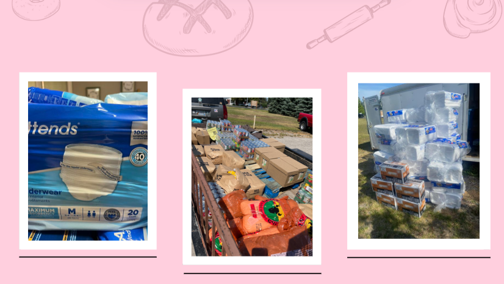
Recovery meetings, treatment centers, hotlines, and community programs.
Your donation helps us continue to feed and support those in need.
Donate via Venmo